Loading ...
|
4-3-3
|
Netherlands | 5 | - | 1 | Sweden |
3-1-4-2
|
| HT 2-0 | ||||||
|
FIFA World CupSaturday 20 June 2026
|
||||||
- Venue
- Houston Stadium
- Attendance
- 68,777
- Referee
- Michael Oliver
Goal5'
B. Brobbey
Assist: C. Gakpo
Goal17'
B. Brobbey
Assist: D. Dumfries
Substitution46'
D. Malen
C. Summerville
Goal47'
C. Gakpo
Assist: D. Dumfries
Goal54'
C. Gakpo
Assist: C. Summerville
- 2
Substitution59'
F. de Jong
T. Koopmeiners
T. Reijnders
G. Til
Substitution72'
B. Brobbey
M. Depay
Goal89'
C. Summerville
Assist: M. Depay
Substitution90'
C. Gakpo
N. Lang
Whistle45+5'
45+5'
Yellow card53'
G. Gudmundsson
Substitution55'
A. Bernhardsson
A. Elanga
- 2
Substitution56'
J. Karlström
B. Zeneli
B. Nygren
L. Bergvall
Goal59'
A. Elanga
Assist: A. Isak
Yellow card75'
Y. Ayari
Substitution79'
Y. Ayari
T. Ali
Yellow card80'
L. Bergvall
Substitution90+3'
G. Gudmundsson
E. Stroud
Netherlands | |
|---|---|
Goalkeeper | |
| 1 | B. Verbruggen |
Defender | |
| 4 | V. van Dijk |
| 6 | J. van Hecke |
| 15 | M. van de Ven |
| 22 | D. Dumfries |
Midfielder | |
| 8 | R. Gravenberch |
| 14 | T. Reijnders 59' |
| 21 | F. de Jong 59' |
Forward | |
| 11 | C. Gakpo 47'54'90' |
| 18 | D. Malen 46' |
| 19 | B. Brobbey 5'17'72' |
Substitutes | |
| 10 | M. Depay 72' |
| 16 | G. Til 59' |
| 17 | N. Lang 90' |
| 20 | T. Koopmeiners 59' |
| 24 | C. Summerville 46'89' |
Sweden | |
Goalkeeper | |
| 23 | K. Nordfeldt |
Defender | |
| 2 | G. Lagerbielke |
| 3 | V. Lindelöf |
| 4 | I. Hien |
Midfielder | |
| 5 | G. Gudmundsson 53'90+3' |
| 10 | B. Nygren 56' |
| 16 | J. Karlström 56' |
| 18 | Y. Ayari 75'79' |
| 21 | A. Bernhardsson 55' |
Forward | |
| 9 | A. Isak |
| 17 | V. Gyökeres |
Substitutes | |
| 7 | L. Bergvall 56'80' |
| 11 | A. Elanga 55'59' |
| 22 | B. Zeneli 56' |
| 24 | E. Stroud 90+3' |
| 26 | T. Ali 79' |


97'
Netherlands are undefeated in their last 14 games in the FIFA World Cup, their longest unbeaten streak in the competition (since at least 1965/1966).
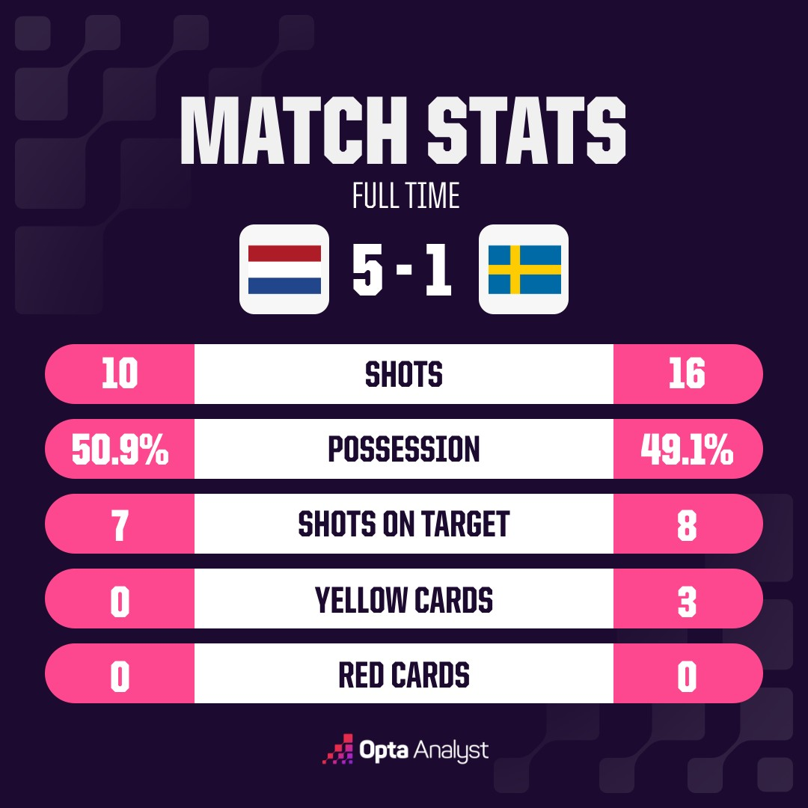
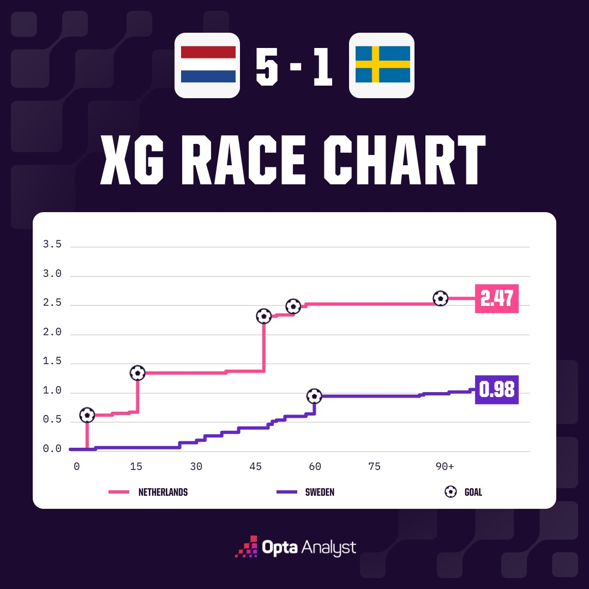
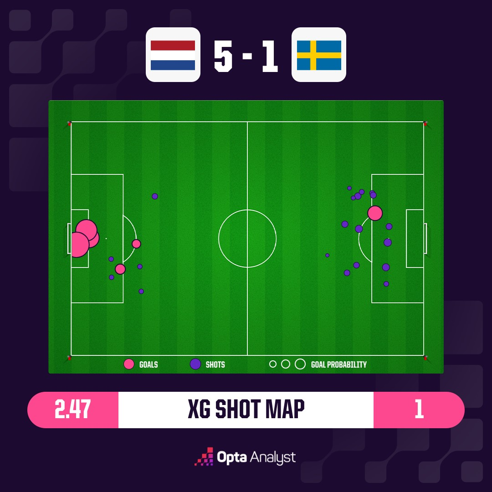
90+6'
Netherlands WIN! It’s all over at Houston Stadium, with Netherlands coming out on top 5-1 over Sweden, thanks to goals from Brian Brobbey, Cody Gakpo and Crysencio Summerville.
90+6'
SHOT! Gustaf Lagerbielke manages to get a shot off from inside the area, but although it was heading in, they cannot get enough on it to beat Bart Verbruggen, who makes the save.
90+5'
It's all hands on deck for Netherlands as they defend their lead, making a wave of critical blocks and clearances
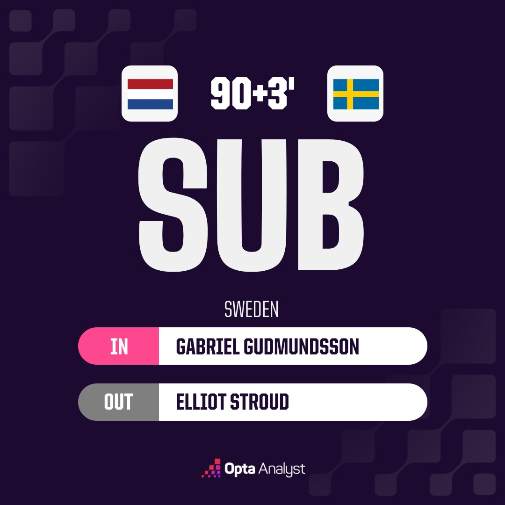
90+3'
A substitution for Sweden sees Gabriel Gudmundsson replaced by Elliot Stroud. There does not appear to be any obvious sign of an injury, so that is a tactical switch.
90+2'
Can Netherlands make this chance count? They have won a free-kick in a threatening position after a foul from Isak Hien on Noa Lang. Will Sweden's defence be tested here?
90+1'
Viktor Gyökeres has attempted 5 shots, the first time he has attempted at least 5 shots in a match in the FIFA World Cup since facing Tunisia on 15th June 2026 (5 shots).
90+1'
BLOCKED! That was close. Viktor Gyökeres got off a shot, which was heading in, but Jan van Hecke was on hand to make a vital intervention. Great block!
90+1'
Ryan Gravenberch goes in on Lucas Bergvall and concedes a foul. The free-kick is not in a particularly dangerous area from Netherlands’s viewpoint, though.
90+1'
Substitution! Noa Lang replaces Cody Gakpo for Netherlands as the manager shuffles the pack. Can Noa Lang make an impression as this match continues?
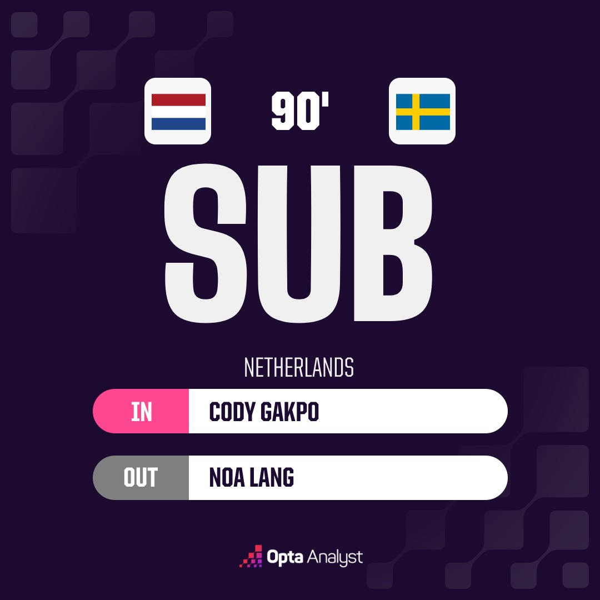
89'
Crysencio Summerville has scored his second goal in the 2026 FIFA World Cup.
89'
Memphis Depay has assisted his first goal in the 2026 FIFA World Cup.
89'
GOAL! Crysencio Summerville scores, and Netherlands are now well in front – surely they will go on and see this one out now? It seems a long way back for Sweden, with Netherlands well in control of this match.
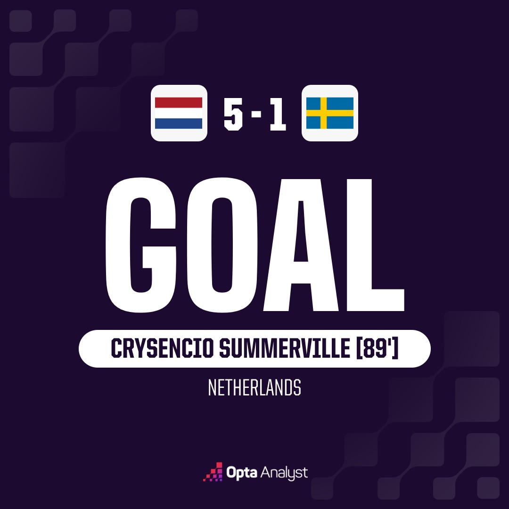
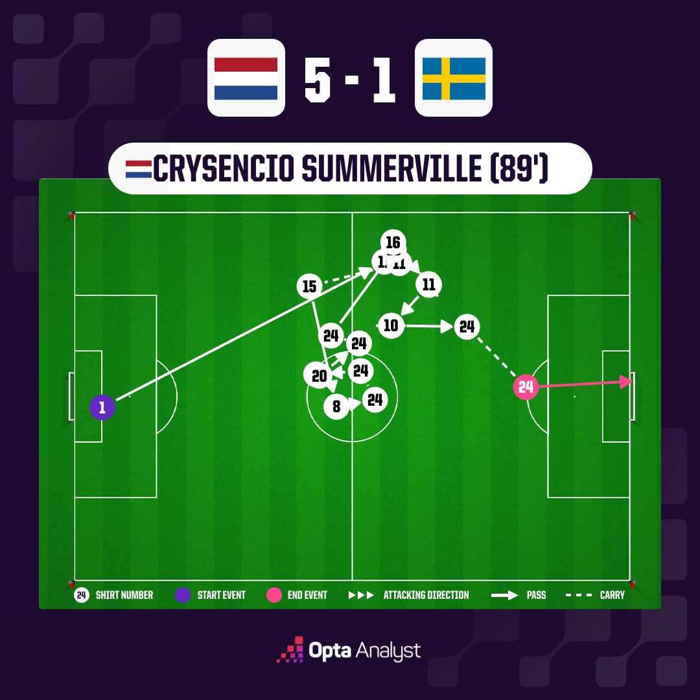
87'
It has been 30 minutes since Netherlands last attempted a shot in this game.
85'
That was hopeful! A bit of a punt from Besfort Zeneli, who goes for goal from distance, but Bart Verbruggen makes the save.
84'
Corner now for Sweden, as they see a shot from Alexander Isak deflected out of play for a set-piece. Netherlands have some defending to do, here. Could this result in a big opportunity?
83'
Neither team has had a shot in the past 10 minutes, as this match just enters something of a down period. Sweden have seen more of the ball, with 55 per cent possession, but Netherlands are keeping them away from goal. There is still a chance the match will spark into life, though.
82'
Free-kick! A foul from Micky van de Ven on Anthony Elanga. It is well away from Netherlands’s goal, so it is unlikely to result in a chance for Sweden.
81'
That’s offside! A switched-on defensive line from Sweden, as they step up at the right time to catch Cody Gakpo offside, and the assistant referee’s flag is up.
80'
Yellow card! Lucas Bergvall will have to be careful from now on after they are cautioned.
80'
Free-kick! A foul from Lucas Bergvall on Cody Gakpo. It is well away from Sweden’s goal, so it is unlikely to result in a chance for Netherlands.
79'
Yasin Ayari’s match is over as Sweden decide to make a substitution. Taha Ali enters the field in what looks like a tactical change.
77'
A rash challenge from Victor Lindelöf, who sends Memphis Depay tumbling, giving Netherlands a free-kick. It is not in a threatening position, but it gives them a chance to get back on the ball.
77'
It's all hands on deck for Netherlands as they defend their lead, making a wave of critical blocks and clearances
75'
The referee goes to their pocket and pulls out a yellow card, which is brandished in the direction of Yasin Ayari. Will they be able to avoid a second booking?
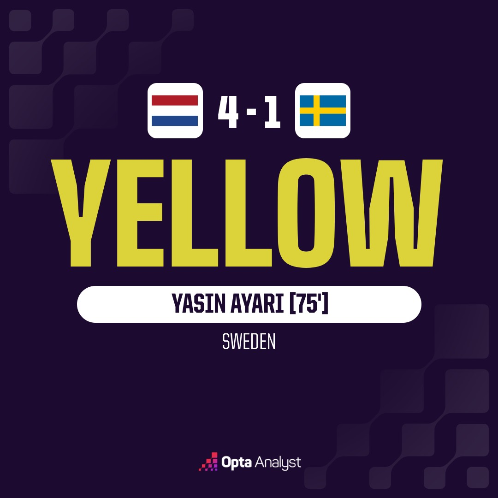
75'
Free-kick! A foul from Yasin Ayari on Ryan Gravenberch. It is well away from Sweden’s goal, so it is unlikely to result in a chance for Netherlands.
74'
Viktor Gyökeres goes in on Micky van de Ven and concedes a foul. The free-kick is not in a particularly dangerous area from Sweden’s viewpoint, though.
73'
Can Sweden make this chance count? They have won a free-kick in a threatening position after a foul from Cody Gakpo on Yasin Ayari. Will Netherlands's defence be tested here?
72'
Netherlands are making a tactical change. Brian Brobbey is leaving the field and in their place comes Memphis Depay – we will soon see if this switch has the desired impact.
72'
Neither team has had a shot in the past 10 minutes, as this match just enters something of a down period. Sweden have seen more of the ball, with 61 per cent possession, but Netherlands are keeping them away from goal. There is still a chance the match will spark into life, though.
67'
Brian Brobbey makes a run in behind but the Sweden defensive line were alert, and stepped up in time to catch them offside. That run just needed to be timed better.
66'
Just over an hour played, so let’s check on the shot count for each side. Sweden have had 12, getting 5 of those on target. Netherlands, meanwhile, have had 6 efforts on target, and 9 overall.
65'
A foul from Brian Brobbey on Isak Hien sees Sweden win a free-kick, but it is not in a dangerous position, so Netherlands should be confident they can defend it easily enough.
65'
Still behind, but Sweden are refusing to roll over - defensive urgency rising as they fend off more pressure and push for a late turnaround.
59'
The Netherlands manager is looking to the substitutes’ bench, bringing on Guus Til in place of Tijjani Reijnders. Will the change make a difference? Let’s find out!
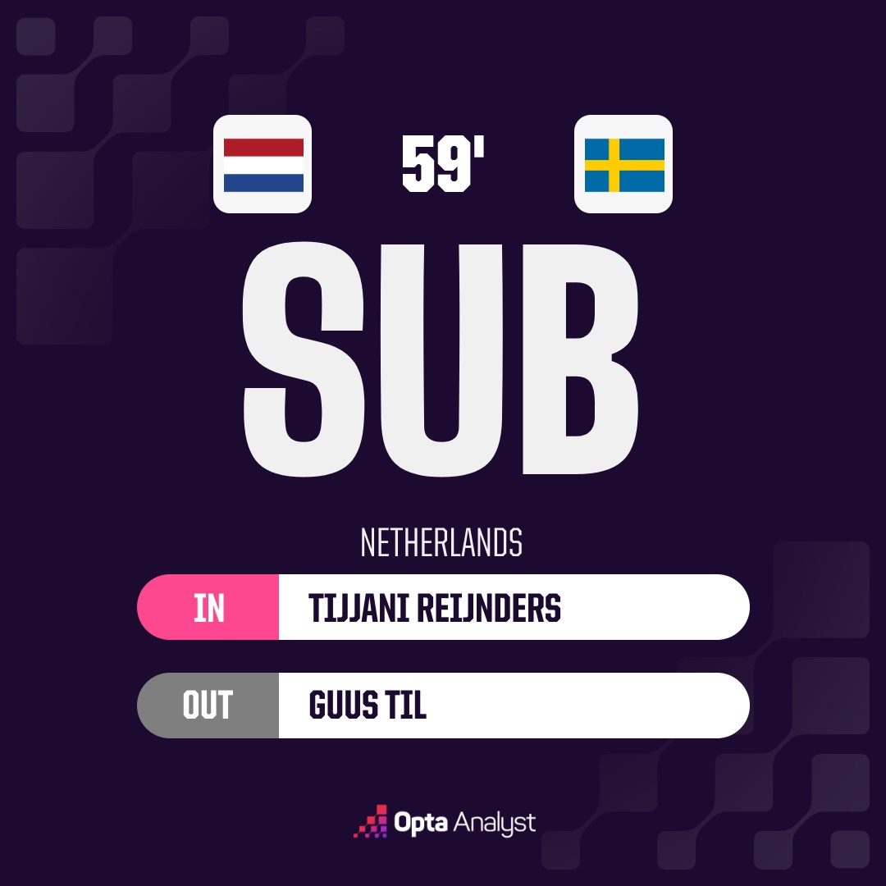
59'
Frenkie de Jong’s match is over as Netherlands decide to make a substitution. Teun Koopmeiners enters the field in what looks like a tactical change.
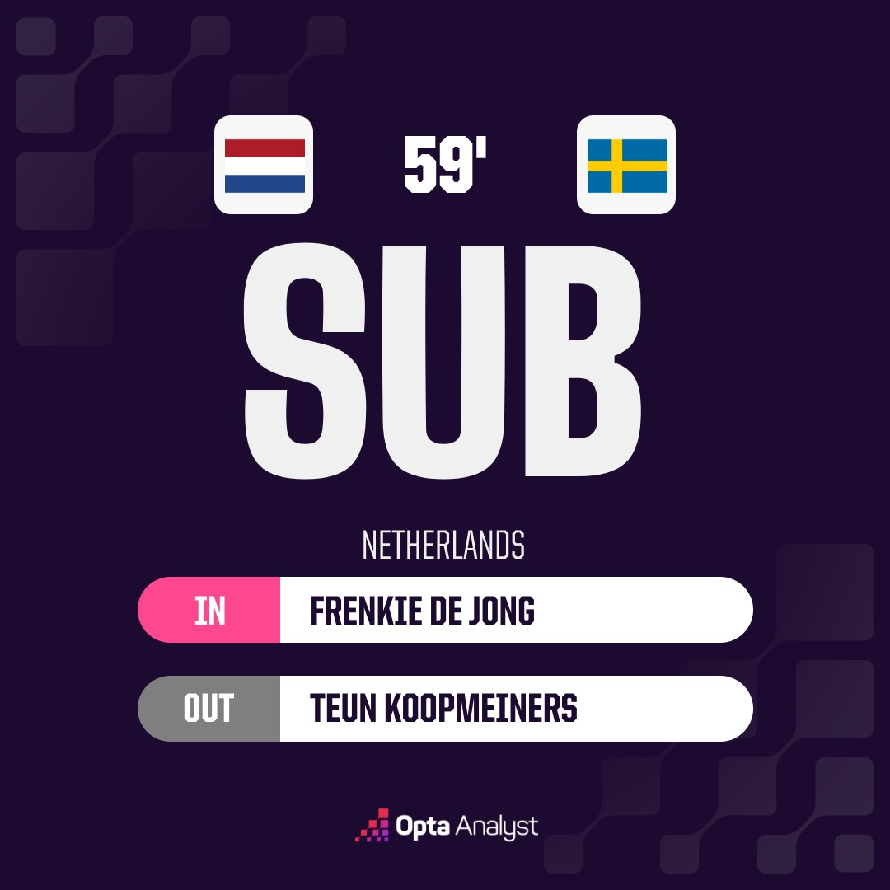
59'
Anthony Elanga has scored his first goal in the 2026 FIFA World Cup.
59'
Alexander Isak has assisted his third goal at the 2025 FIFA World Cup, more than any other player.
59'
GOAL! Will this just be a consolation for Sweden, or could this be the start of a miraculous comeback? They are still three goals behind, but maybe there is a glimmer of hope.
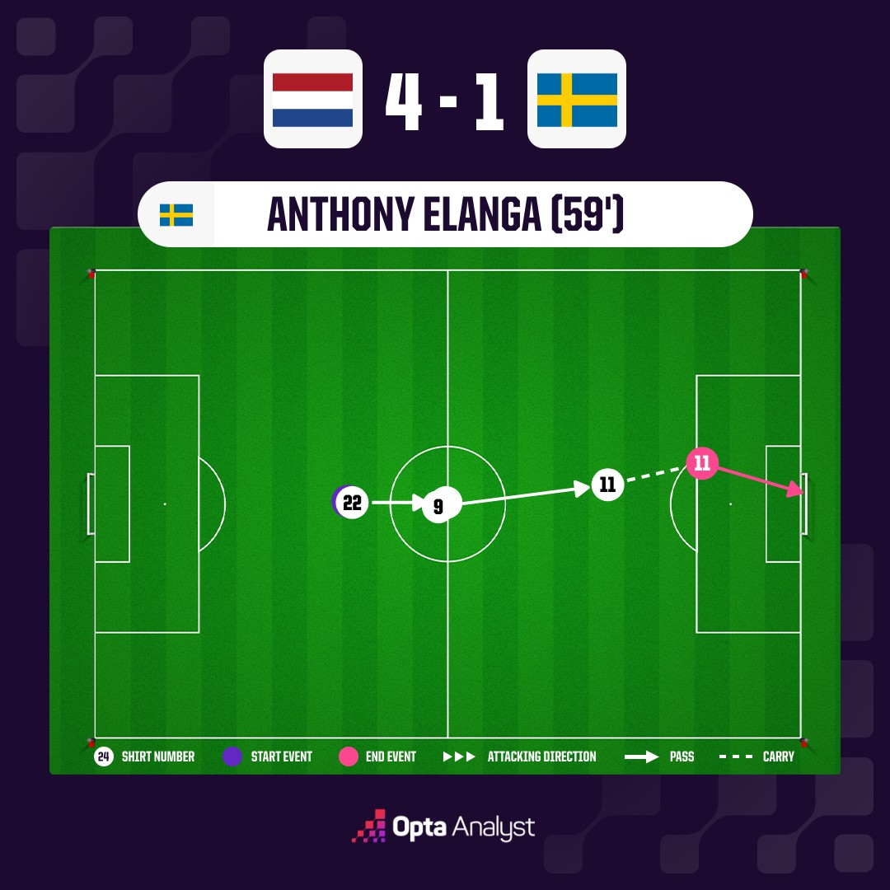
57'
That is a disappointing effort from Ryan Gravenberch, who went for glory but got their attempt wrong, and the shot sailed off target. A frustrating moment for Netherlands.
57'
Yasin Ayari has attempted 5 shots, his highest total in a single match in the FIFA World Cup.
57'
That is a disappointing effort from Yasin Ayari, who went for glory but got their attempt wrong, and the shot sailed off target. A frustrating moment for Sweden.
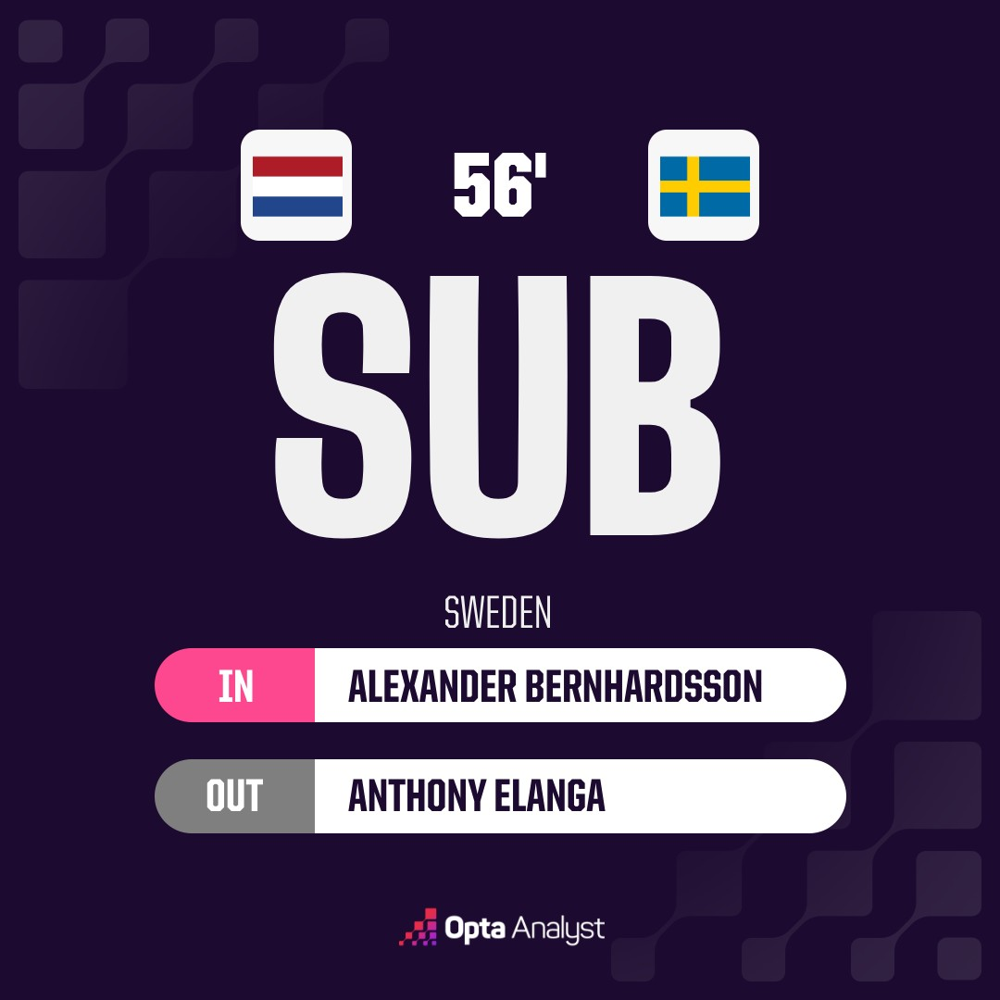
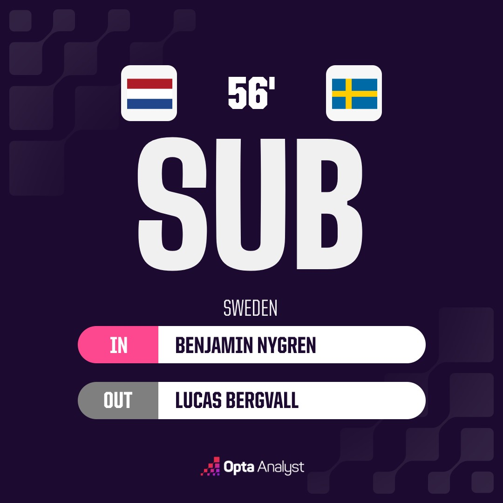
56'
Benjamin Nygren’s match is over as Sweden decide to make a substitution. Lucas Bergvall enters the field in what looks like a tactical change.
56'
The Sweden manager is looking to the substitutes’ bench, bringing on Besfort Zeneli in place of Jesper Karlström. Will the change make a difference? Let’s find out!
55'
Sweden are making a tactical change. Alexander Bernhardsson is leaving the field and in their place comes Anthony Elanga – we will soon see if this switch has the desired impact.
54'
Cody Gakpo has attempted 5 shots, his highest total in a single match in the FIFA World Cup.
54'
Netherlands have scored 4 goals in the FIFA World Cup game for the first time since 13th June 2014 against Spain (W5-1).
54'
Cody Gakpo has scored his fifth goal in the FIFA World Cup.
54'
Crysencio Summerville has assisted his first goal in the 2026 FIFA World Cup.
54'
Is that game over? Netherlands are now well ahead, having extended their lead to 4 goals thanks to Cody Gakpo’s effort. It’s now 4-0, and Sweden face an uphill battle to get back into it.
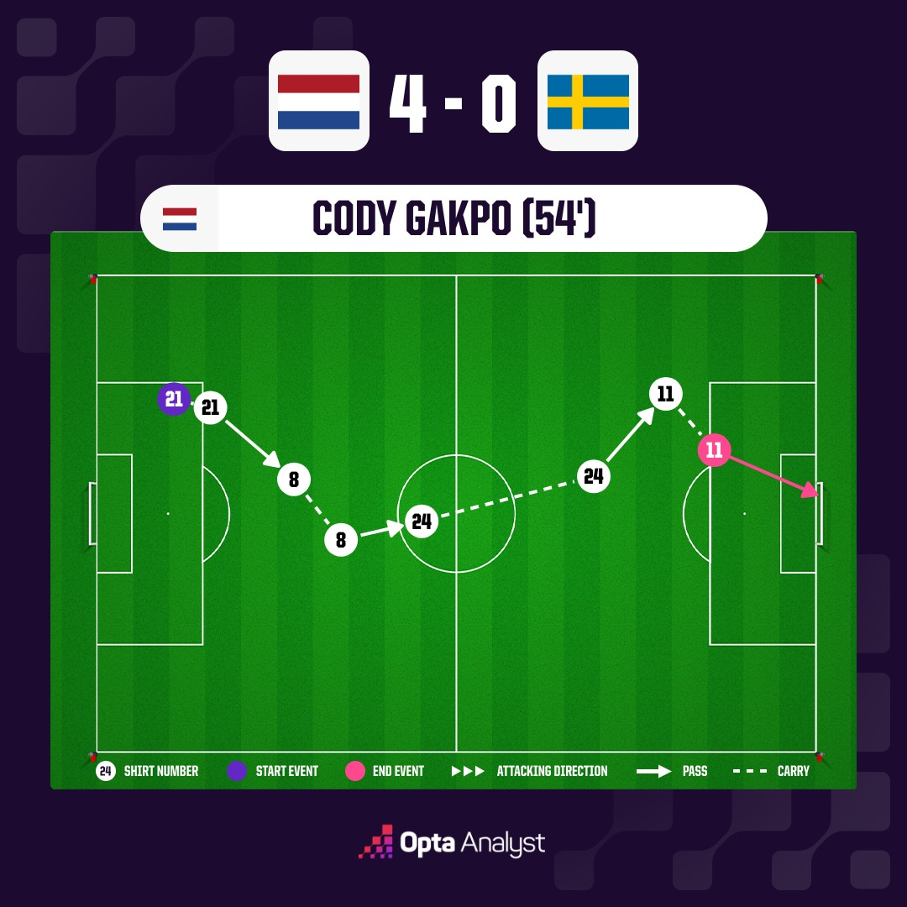
53'
Yellow card! Gabriel Gudmundsson will have to be careful from now on after they are cautioned.
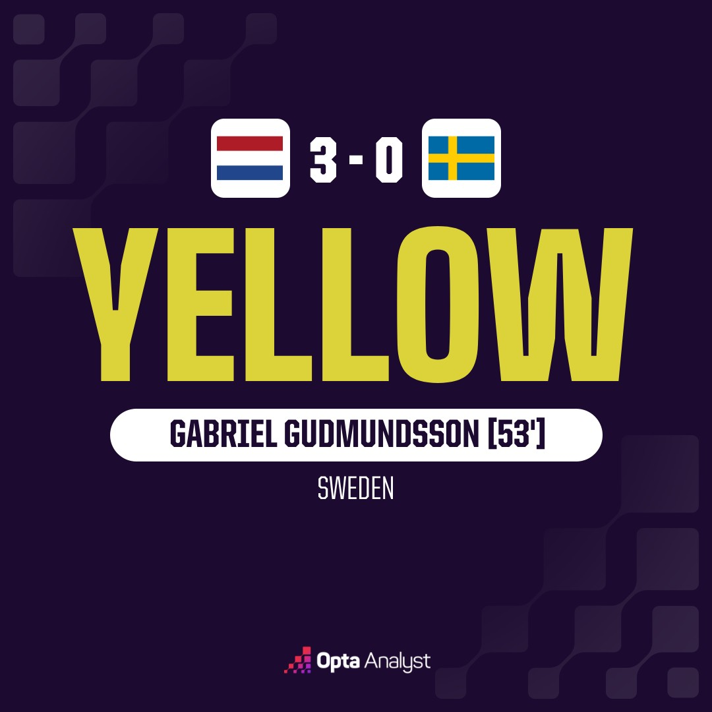
53'
Free-kick! A foul from Gabriel Gudmundsson on Crysencio Summerville. It is well away from Sweden’s goal, so it is unlikely to result in a chance for Netherlands.
52'
BLOCK! An intervention from Brian Brobbey might have just prevented a goal, with the defending player getting in the way of an attempt from Yasin Ayari. Solid defending there!
52'
Great defending from Netherlands, who are staying organised and winning key battles to preserve their lead.
50'
BLOCKED! That was close. Cody Gakpo got off a shot, which was heading in, but Gustaf Lagerbielke was on hand to make a vital intervention. Great block!
47'
Netherlands have scored 3 goals in the FIFA World Cup game for the first time since 3rd December 2022 against United States (W3-1).
47'
Cody Gakpo has scored his first goal in the 2026 FIFA World Cup, netting for the first time since 29th November 2022 against Qatar.
47'
Denzel Dumfries has assisted his second goal in the 2026 FIFA World Cup.
47'
GOAL! Cody Gakpo scores, and Netherlands are now well in front – surely they will go on and see this one out now? It seems a long way back for Sweden, with Netherlands well in control of this match.
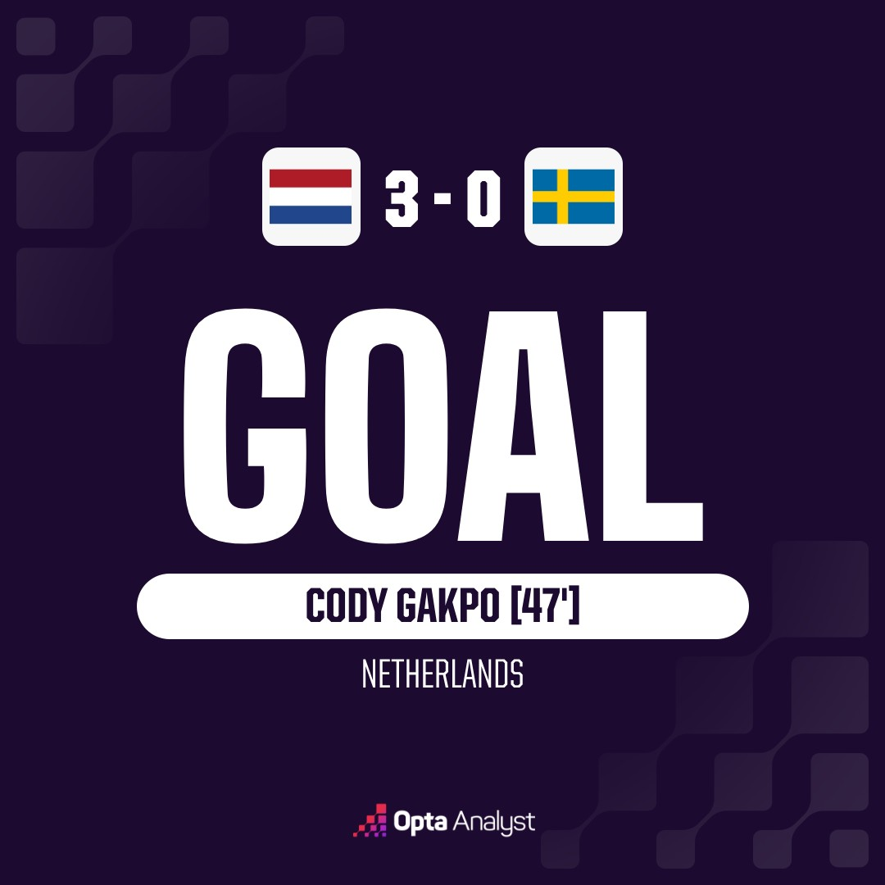
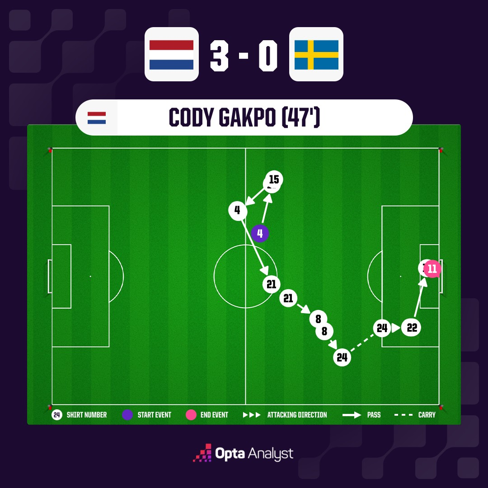
46'
A rash challenge from Jesper Karlström, who sends Tijjani Reijnders tumbling, giving Netherlands a free-kick. It is not in a threatening position, but it gives them a chance to get back on the ball.
46'
Substitution! Crysencio Summerville replaces Donyell Malen for Netherlands as the manager shuffles the pack. Can Crysencio Summerville make an impression as this match continues?
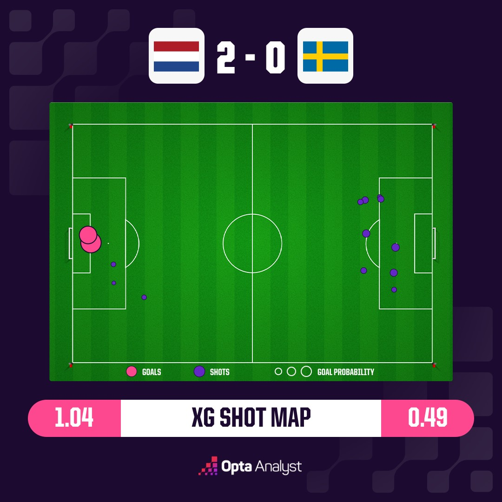
45+5'
Half-time! The referee blows the whistle and it is time for the interval. As we reach the break it is Netherlands 2-0 Sweden at Houston Stadium.
45+5'
Bart Verbruggen has made 5 saves, his highest total in a single match in the FIFA World Cup.
45+5'
Sweden win a corner after Yasin Ayari sees a shot diverted wide by Bart Verbruggen. Can Sweden make this opportunity count, or will Netherlands defend this?
45+4'
Virgil van Dijk goes in on Viktor Gyökeres and concedes a foul. The free-kick is not in a particularly dangerous area from Netherlands’s viewpoint, though.
45+4'
MISS! A shot from Benjamin Nygren ends up being off target. They might have done a bit better with that one, but it remains Sweden 0-2 Netherlands.
45+3'
Save! A long-range strike from Viktor Gyökeres was heading in, but Bart Verbruggen got to it to parry it away from danger.
45+2'
A free-kick in a dangerous position now for Sweden, after a foul from Denzel Dumfries on Yasin Ayari. Can Sweden make Netherlands pay for that rashness from Denzel Dumfries?
44'
Gustaf Lagerbielke makes a run in behind but the Netherlands defensive line were alert, and stepped up in time to catch them offside. That run just needed to be timed better.
44'
This could be a chance for Sweden, after Ryan Gravenberch fouls Gabriel Gudmundsson, handing them a free-kick in a threatening area. A good set-piece from here could really test the Netherlands defense!
41'
That is a disappointing effort from Yasin Ayari, who went for glory but got their attempt wrong, and the shot sailed off target. A frustrating moment for Sweden.
40'
Great defending from Netherlands, who are staying organised and winning key battles to preserve their lead.
39'
Despite trailing, Sweden are showing real defensive grit, digging in and stopping further damage as they try to build a platform.
38'
Kristoffer Nordfeldt is called into action to keep out a shot from outside the box by Cody Gakpo. The effort from the Netherlands player was on target, but Sweden shot-stopper got to it.
37'
CLOSE! Viktor Gyökeres gets into a decent shooting position inside the Netherlands area, and manages to find space to get an effort off. However, Bart Verbruggen is equal to it.
35'
Netherlands looking confident now - a composed spell of possession as they stroke the ball around and head toward the break in control.
33'
MISS! A shot from Viktor Gyökeres ends up being off target. They might have done a bit better with that one, but it remains Sweden 0-2 Netherlands.
33'
Netherlands have had plenty of the ball in the last 15 minutes, with 65.38% possession compared to just 34.62% for their opponents. However, there has not been any shot to come from that possessional dominance, which will be a huge frustration for their coach.
31'
MISS! The score remains 0-2, with Netherlands relieved after Sweden’s Yasin Ayari goes for goal but sends their attempt off target. Not one to write home about, that one.
27'
This game is certainly in a bit of a lull now, with neither team having had an attempt at goal in the past 10 minutes. It could do with something to spark it into life. Netherlands have had more possession during the quiet spell, but are yet to do much with it.
22'
A foul from Denzel Dumfries on Alexander Bernhardsson sees Sweden win a free-kick, but it is not in a dangerous position, so Netherlands should be confident they can defend it easily enough.
22'
A free-kick in a dangerous position now for Netherlands, after a foul from Gustaf Lagerbielke on Brian Brobbey. Can Netherlands make Sweden pay for that rashness from Gustaf Lagerbielke?
21'
Benjamin Nygren goes in on Denzel Dumfries and concedes a foul. The free-kick is not in a particularly dangerous area from Sweden’s viewpoint, though.
19'
Free-kick! A foul from Benjamin Nygren on Frenkie de Jong. It is well away from Sweden’s goal, so it is unlikely to result in a chance for Netherlands.
17'
Brian Brobbey has scored his second goal of the 2025 FIFA World Cup this edition, more than any other Netherlands player.
17'
Denzel Dumfries has assisted his first goal in the 2026 FIFA World Cup.
17'
GOAL! Netherlands have extended their lead! It's Brian Brobbey who has got the goal, and Sweden are now two goals behind, with Netherlands now in a strong position to record a victory.
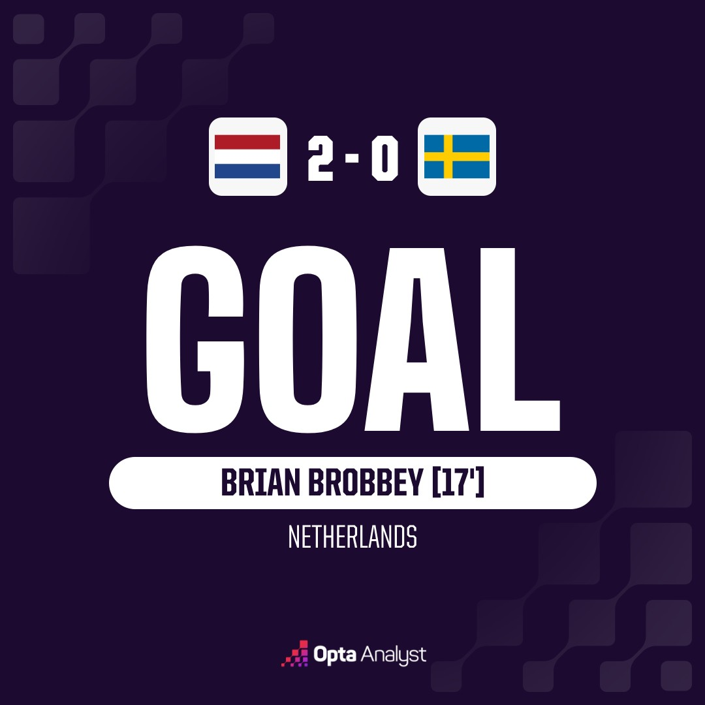
15'
No luck! Tijjani Reijnders takes on a shot that, had they got it right, might have been set to test the goalkeeper, but instead it is sent off target and Sweden come away unscathed.
14'
Offside! Tijjani Reijnders thought they were through on goal, but the Sweden defence stepped up in time to catch them offside, and the assistant referee puts their flag up.
11'
CLOSE! Cody Gakpo gets into a decent shooting position inside the Sweden area, and manages to find space to get an effort off. However, Kristoffer Nordfeldt is equal to it.
9'
A foul from Jesper Karlström on Tijjani Reijnders sees Netherlands win a free-kick, but it is not in a dangerous position, so Sweden should be confident they can defend it easily enough.
8'
No luck – it’s offside! Alexander Isak looked to dart in behind and get on the end of a pass, yet they just went too early, and the flag is up to signal offside.
7'
Viktor Gyökeres's effort is deflected out for a corner. Can Sweden make anything of this set-piece?
5'
Netherlands have avoided defeat in their last 24 matches when scoring first in the FIFA World Cup, since a 2-3 loss to Scotland on 11th June 1978.
5'
Brian Brobbey has scored his first goal in the 2026 FIFA World Cup.
5'
Cody Gakpo has assisted his first goal in the 2026 FIFA World Cup.
5'
GOAL! Netherlands have gone in front! Brian Brobbey makes a dream start to the game by providing the early goal. Netherlands have the advantage now – how will Sweden respond to falling behind in the early stages?
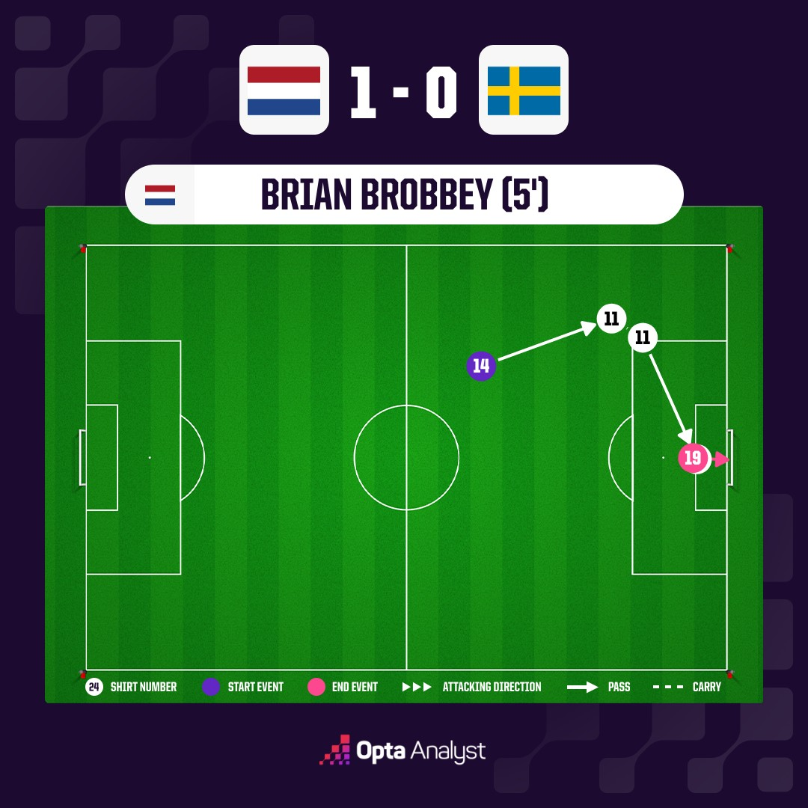
3'
Viktor Gyökeres makes a run in behind but the Netherlands defensive line were alert, and stepped up in time to catch them offside. That run just needed to be timed better.
2'
A foul from Jan van Hecke on Alexander Isak sees Sweden win a free-kick, but it is not in a dangerous position, so Netherlands should be confident they can defend it easily enough.
1'
Kick-off! Up and running at Houston Stadium, with Netherlands getting the ball rolling. Who will come out on top?
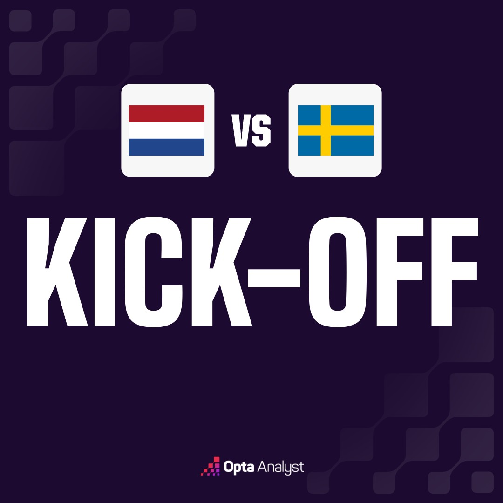
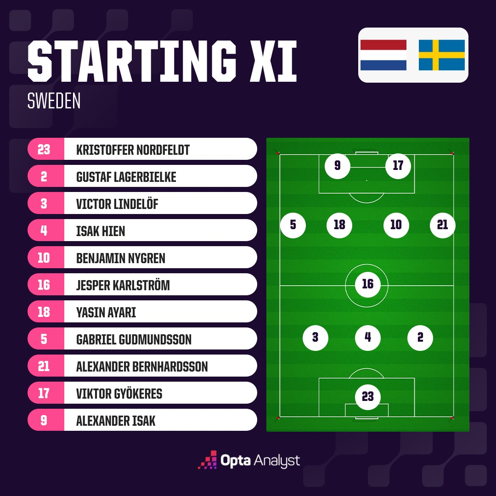
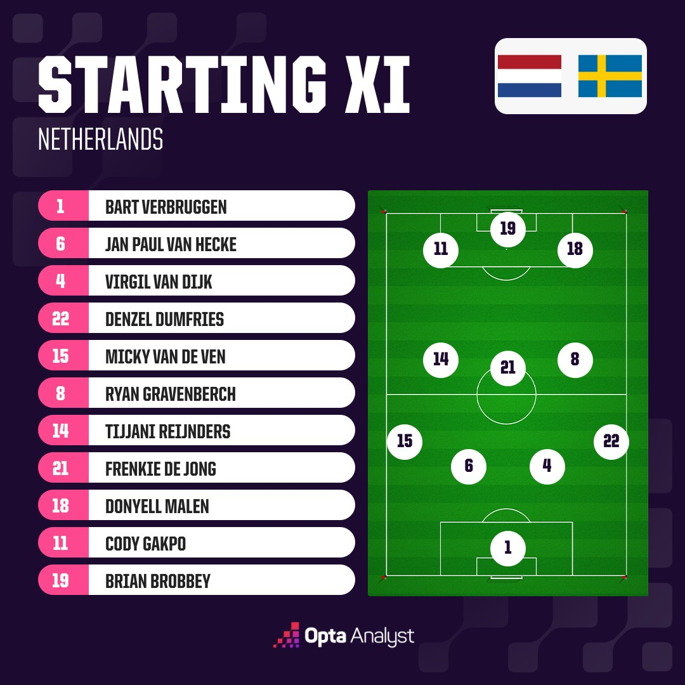
Sweden will look to protect their perfect start early in the FIFA World Cup group stage when they play the Netherlands at Houston Stadium on Saturday.
The Netherlands earned a point in their opening World Cup group stage match, drawing 2-2 against Japan on June 14. Virgil van Dijk and Crysencio Summerville scored in the draw. In five games this year, they have two wins, two draws, and one loss.
Sweden defeated Tunisia 5-1 in their opening World Cup group stage game, a June 14 clash at Estadio Monterrey. Yasin Ayari led the team with a brace. In 2026, they have won three, drawn one, and lost one.
Sweden lead the group on three points, while the Netherlands' one point places them third. Elsewhere in the group, Japan are sitting second on one point. Tunisia are fourth on zero points.
The previous fixture between the teams saw the Netherlands triumph 2-0 in an UEFA World Cup Qualifiers 1st Round match at Johan Cruijff ArenA in October 2017. Arjen Robben led Netherlands with two goals, scoring in the 16th and 40th minute.
van Dijk and Summerville share the early World Cup scoring lead for the Netherlands after each netting against Japan. With a brace against Tunisia, Ayari is the early leading World Cup scorer for Sweden.
In their last six matches in all competitions, the Netherlands have won three, drawn two and lost one. The Dutch side scored 11 and conceded six over that stretch, scoring first in four of the six contests. They had four first-half goals, while their opponents netted two times in the first 45 minutes. The Swedish side have won three, drawn two and lost one in their last six. The Swedish side scored 15 and conceded 10 in that stretch, netting first in three of the six. They had five goals in the first half, while their opponents netted six times before the break.
-
General
Possession 50.9% 50.87549.12549.1% Possession lost in defensive half 19 194040 Possession lost in middle third 38 383434 Duels 89 899191 Duels success rate 48.3% 48.31550.54950.5% Aerial duels 27 272727 Aerial duels won 51.9% 51.85248.14848.1% Successful dribbles 3 377 Fouls won 12 1299 Offsides 3 333 Corner awarded 2 255 -
Distribution
Passes 449 449425425 Long passes 35 353030 Long passes proportion (%) 7.8% 7.7957.0597.1% Passing accuracy 88.6% 88.64184.94184.9% Passes in opponents' half 233 233193193 Passing accuracy in opponents' half (%) 82.8% 82.83378.75678.8% Total passes in the final third 97 97107107 Passing accuracy in final third (%) 77.3% 77.3281.30881.3% Forward passes 273 273276276 Forward passes (%) 60.8% 60.80264.94164.9% Through balls 1 122 Final third entries 49 493636 Penalty area entries 20 202828 Total open play crosses 14 141717 Crosses 16 162121 Crossing accuracy 18.8% 18.7514.28614.3% -
Attack
Goals 5 511 Shots 10 101616 Shots on target 7 788 Blocked shots 1 133 Headed shots 1 111 Shots outside the box 4 499 Shots inside the box 6 677 Shots accuracy excluding blocked shots 77.8% 77.77861.53861.5% Shooting accuracy 70.0% 705050.0% Key Passes 9 91515 -
Defence
Tackles 15 151818 Tackles success rate 53.3% 53.3335050.0% Clearances 24 241414 Interceptions 8 855 Recoveries 40 403636 Attacking third recovery 6 600 Defensive third recovery 16 162222 Midfield third recovery 18 181414 Recoveries in attacking half (%) 15.0% 1500.0% -
Discipline
Fouls conceded 9 91212 Yellow cards 0 033 Red cards 0 000